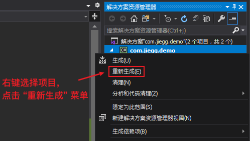
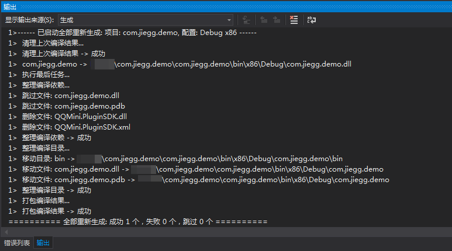
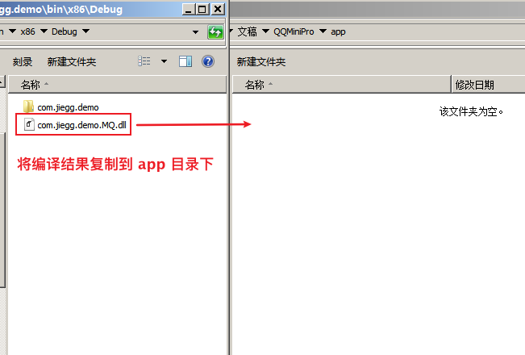
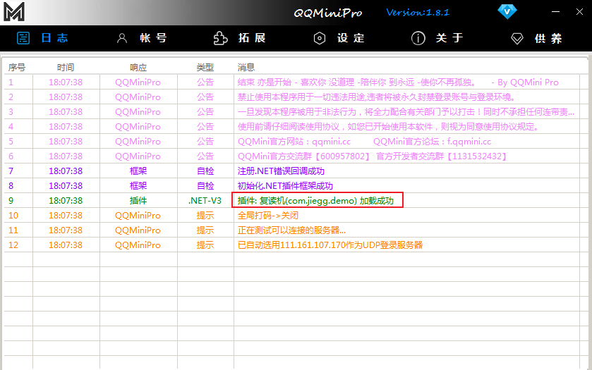

简介
本章节将讲述如何部署 QQMini.PluginSDK 到 QQMini Pro 中。
步骤
重新生成项目。例如: com.jiegg.demo
选中我们插件的项目，右键打开菜单，选择 “重新生成” 菜单，把插件重新进行编译

点击生成后，请关注 “输出” 窗口。窗口内会显示当前插件的编译进度。若看到如下图所示表示编译成功

复制编译结果到 QQMini
插件编译完成后，我们需要将编译好的 DLL 复制到 QQMini 下加载并运行。在此之前，请确保运行 QQMini 的电脑有安装插件对应的 .NET 运行库。需要下载请到 环境要求

运行 QQMini 测试插件
打开 QQMini 后，插件将成功被加载。加载成功后请登陆QQ账号，在 “拓展” -> “V3” 中启用插件。即可实现复读功能

至此，插件 “复读机” 已经成功加载上 QQMini